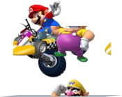

Jogos de Sucesso
WII SPORTS - 82 MILHÕES VENDIDOS
Lançado em 2006 como jogo incluso no console, Wii Sports revolucionou a forma como as pessoas jogavam videogame. Em vez de botões tradicionais, o jogador usava o movimento do corpo para jogar tênis, boliche, boxe e mais.
Com controles simples e acessíveis, tornou-se o primeiro contato com jogos eletrônicos para milhões de pessoas, desde crianças até idosos. Sua popularidade foi tão grande que o jogo ultrapassou 80 milhões de cópias, entrando para a história como símbolo da interatividade e da união familiar nos games.
JUST DANCE - 26 MILHÕES VENDIDOS

Estreando em 2009, Just Dance foi uma surpresa que transformou o Wii em pista de dança. O jogador segurava o controle e imitava os passos dos dançarinos na tela, tudo com músicas pop contagiantes e visuais coloridos.
Apesar de parecer simples, virou um fenômeno nas festas e reuniões familiares. A série se tornou anual, e até hoje é sinônimo de dança e descontração. Foi um dos maiores sucessos casuais do Wii, mostrando como o console conseguia atrair pessoas que nunca tinham jogado antes.

MARIO KART - 37 MILHÕES VENDIDOS
Lançado em 2008, Mario Kart Wii elevou o caos das corridas com itens malucos e pistas criativas a um novo nível. Introduziu o controle de direção usando o Wii Wheel, onde o jogador podia literalmente virar o controle como um volante.
Com mais de 37 milhões de cópias vendidas, foi um dos maiores sucessos do console. Suporte para 12 jogadores online, personagens novos (como Rosalina) e motos como novidade garantiram corridas ainda mais intensas. É lembrado até hoje por sua diversão acessível e competitivo para todas as idades
WII FIT - 22 MILHÕES VENDIDOS

Lançado em 2007, Wii Fit foi mais que um jogo virou uma revolução no bem-estar digital. Com a Wii Balance Board, o jogador realizava exercícios de equilíbrio, yoga, aeróbica e treinos físicos.
Era possível acompanhar o progresso, definir metas e até calcular o IMC. Usado por pessoas de todas as idades, inclusive em fisioterapia e academias, Wii Fit transformou o videogame em aliado da saúde, quebrando o estereótipo de que jogos são só para lazer.